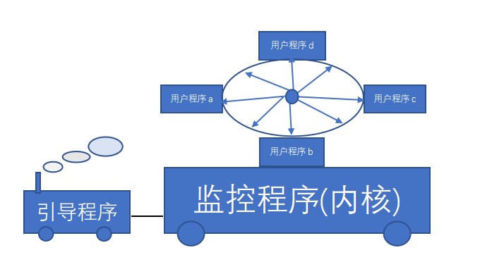
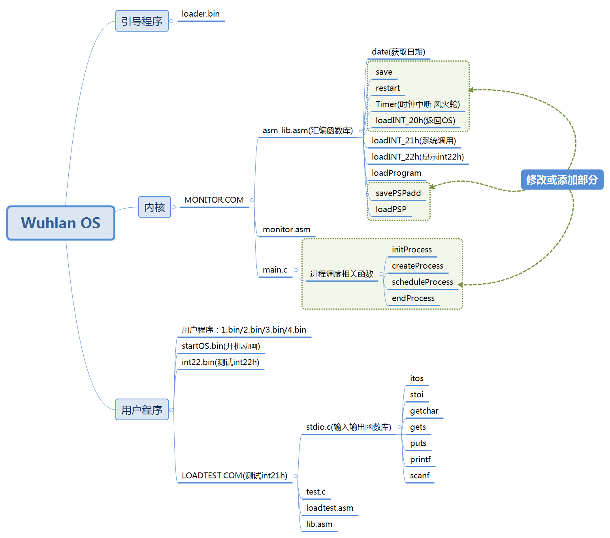
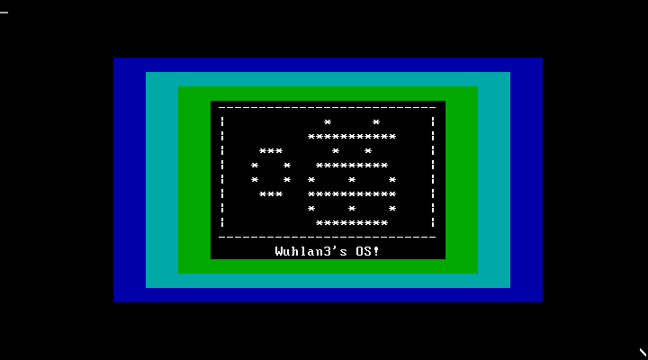
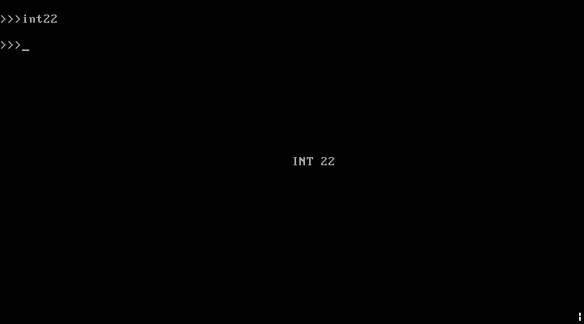
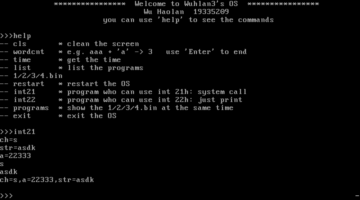
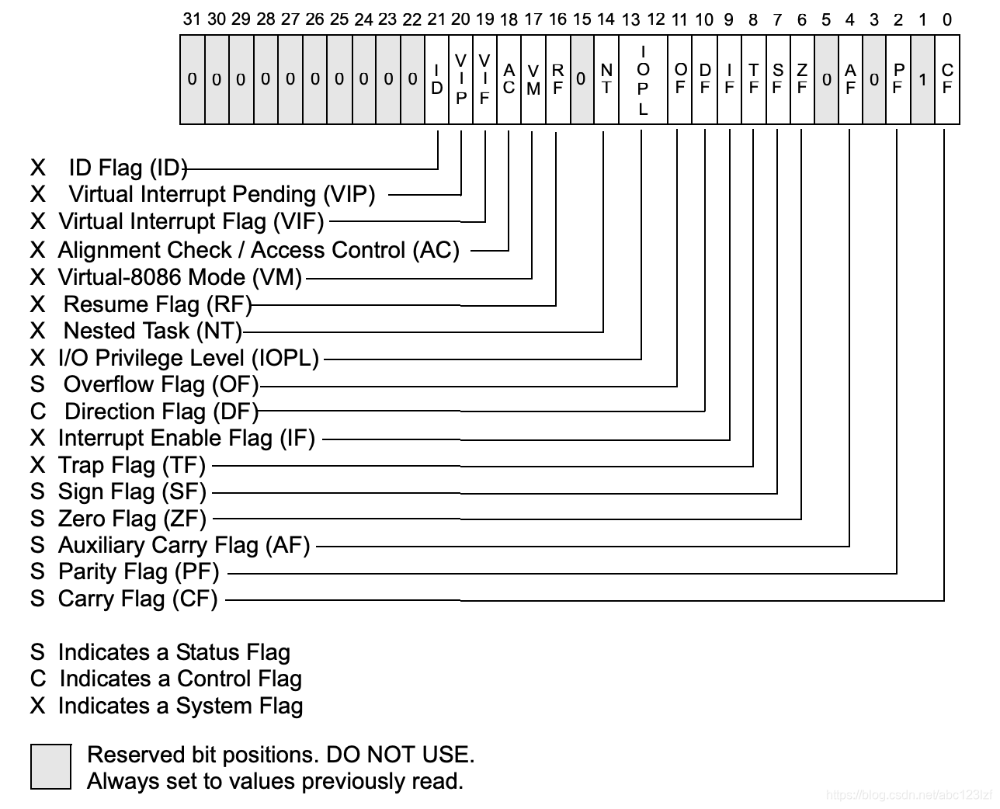
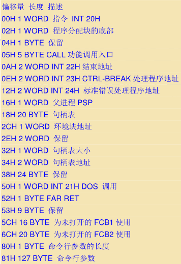

实验6：二态进程模型内核
本文最后更新于：2 years ago
实验6：二态进程模型内核
实验目的
1、学习多道程序与CPU分时技术
2、掌握操作系统内核的二态进程模型设计与实现方法
3、掌握进程表示方法
4、掌握时间片轮转调度的实现
实验要求
1、了解操作系统内核的二态进程模型
2、扩展实验五的的内核程序，增加一条命令可同时创建多个进程分时运行，增加进程控制块和进程表数据结构。
3、修改时钟中断处理程序，调用时间片轮转调度算法。
4、设计实现时间片轮转调度算法，每次时钟中断，就切换进程，实现进程轮流运行。
5、修改save()和restart()两个汇编过程，利用进程控制块保存当前被中断进程的现场，并从进程控制块恢复下一个进程的现场。
6、编写实验报告，描述实验工作的过程和必要的细节，如截屏或录屏，以证实实验工作的真实性
实验内容
-
修改实验5的内核代码，内核执行期间，关中断，实现内核不可再入。
-
修改实验5的内核代码，定义进程控制块，包括进程号、程序名、进程内存地址信息、CPU寄存器保存区、进程状态等必要数据项。
-
扩展实验五的的内核程序，增加一条命令可同时执行多个用户程序，内核加载这些程序，创建多个进程，实现分时运行
-
修改时钟中断处理程序，保留无敌风火轮显示，而且增加调用进程调度过程
-
内核增加进程调度过程:每次调度，将当前进程转入就绪状态，选择下一个进程运行，如此反复轮流运行。
-
修改save()和restart()两个汇编过程，利用进程控制块保存当前被中断进程的现场，并从进程控制块恢复下一个进程的运行。
-
实验5的内核其他功能，如果不必要，可暂时取消服务。

实验环境
1.系统与虚拟机
- Windows 10 - x64 18363.1139
- VMware Workstation 16 Player：用于跑ubuntu虚拟机
- Ubuntu 20.04.2 LTS
- VirtualBox-6.1.18-142142-Win：用于运行.img文件
- DOSBox DOS Emulator 0,74,0,0：用于tcc和tasm编译，并且运行.com文件
2.windows上的相关软件、编译器等
- NASM version 2.10.07 compiled on Jan 2 2013
- TCC.EXE：用于16位C语言编程
- TLINK.EXE：用于C语言与汇编语言链接
- TASM.EXE：用于.asm文件的汇编
3.Ubuntu上的相关软件、编译器等
- NASM version 2.14.02
- makefile：GNU Make 4.2.1
实验基本架构

实验过程
1.载入内存函数的修改
对载入内存函数loadProgram进行修改，添加多几个参数。因为多进程同时运行的时候，是需要几个用户程序载入内存的不同位置，段地址和偏移量不再像之前那样定死了。同时由于过去常常出现磁头号和载入扇区数等错误，所以把这两个参数也引入，使得更加灵活，减少错误的发生。
参数从右往左依次入栈，使用bp来进行寻址
public _loadProgram ;extern int loadBlock(int es, int bx, char sector, int num, int head);从右往左依次入栈
_loadProgram proc near
push bp ;head/num/sector/bx/es/ip/bp
mov bp,sp
push ax
push bx
push cx
push dx
push es
mov ax,[bp+4] ;段地址 es
mov es,ax
mov bx,[bp+6] ;偏移量 bx
mov ah,2
mov al,[bp+10] ;扇区数 num
mov ch,0
mov cl,[bp+8] ;扇区 sector
mov dl,0
mov dh,[bp+12] ;磁头号 head
int 13h
pop es
pop dx
pop cx
pop bx
pop ax
pop bp
ret
_loadProgram endp2.save和restart的修改
只需要在上一个实验的基础上进行小修改，_cpuReg——>_curPCB，即可：
;保护现场，此时栈顶/flags/cs/int ip/save ip*************
_save proc near
push ds ;/flags/cs/ip/ip/ds
push cs
pop ds ;ds=cs
push si ;/flags/cs/ip/ip/ds/si
mov si,word ptr DGROUP:_curPCB ;此时si是PCB结构体的地址
pop word ptr [si+16] ;si存入结构体,/flags/cs/ip/ip/ds
pop word ptr [si+14] ;ds存入结构体,/flags/cs/ip/ip
lea si,ret_temp ;这个ip指的是save的返回地址
pop word ptr [si] ;ip存入ret_temp中,/flags/cs/ip
mov si,word ptr DGROUP:_curPCB
pop word ptr [si+22] ;ip存入结构体，/flags/cs
pop word ptr [si+24] ;cs存入结构体，/flags
pop word ptr [si+26] ;flags存入结构体，/，栈为空
mov [si+18],ss ;ss存入结构体
mov [si+20],sp ;sp存入结构体
mov si,ds
mov ss,si ;将栈修改为内核栈
mov sp,word ptr DGROUP:_curPCB
add sp,14 ;此时指向PCB结构体的
push es
push bp
push di
push dx
push cx
push bx
push ax ;PCB结构体保存es/bp/di/dx/cx/bx/ax
mov si,word ptr DGROUP:_kernelPCB
mov sp,[si+20] ;sp变为内核态
mov ax,cs
mov es,ax ;cs变为内核态
lea si,ret_temp
mov ax,[si]
jmp ax ;返回call _save的位置
_save endp
;********************************************************只需要在上一个实验的基础上进行小修改，_cpuReg——>_curPCB，即可：
;恢复现场********************************************
_restart proc near
mov si,word ptr DGROUP:_kernelPCB
mov [si+20],sp
;lea sp,_curPCB
mov sp,word ptr DGROUP:_curPCB ;将栈指针指向PCB结构体，对前7个寄存器进行出栈
pop ax
pop bx
pop cx
pop dx
pop di
pop bp
pop es
;结构体中/flags/cs/ip/sp/ss/si/ds
lea si,ds_temp ;使用一个临时变量存储ds,/flags/cs/ip/sp/ss/si
pop word ptr [si] ;结构体中/flags/cs/ip/sp/ss/si
lea si,si_temp ;使用一个临时变量存储si
pop word ptr [si] ;结构体中/flags/cs/ip/sp/ss
lea si,bx_temp
mov [si],bx ;保护一下bx
pop bx ;结构体中/flags/cs/ip/sp
mov ss,bx ;bx为原来的栈地址
mov bx,sp
mov sp,[bx] ;bx此时是结构体中sp的地址，恢复栈的sp
add bx,2 ;使bx指向ip
push word ptr [bx+4] ;原来的栈中：/flags
push word ptr [bx+2] ;原来的栈中：/flags/cs
push word ptr [bx] ;原来的栈中：/flags/cs/ip
push ax ;原来的栈中：/flags/cs/ip/ax
push word ptr [si] ;原来的栈中：/flags/cs/ip/ax/bx
lea si,ds_temp
mov ax,[si]
lea si,si_temp
mov bx,[si]
mov ds,ax ;恢复ds
mov si,bx ;恢复si
pop bx ;原来的栈中：/flags/cs/ip/ax
pop ax ;原来的栈中：/flags/cs/ip
iret
_restart endp3.进程控制块
在实验五的基础上，将寄存器结构体修改为进程控制块，额外添加几个变量作为控制信息。其中0代表新建态；1代表运行态；2代表阻塞态。
typedef struct{
/*寄存器*/
int ax;
int bx;
int cx;
int dx;
int di;
int bp;
int es;
int ds;
int si;
int ss;
int sp;
int ip;
int cs;
int flags;
/*其他信息*/
int pid;
char name[10]; /*貌似没有起到作用，不过老师写了就跟着写*/
int status; /*新建态/结束态：0，运行：1，阻塞：2*/
}PCB;同时声明PCB序列，并记录当前的PCB和内核的PCB
PCB PCBList[processNum]; /*PCB序列，存储所有进程的信息*/
PCB *curPCB = &PCBList[processNum - 1]; /*当前的PCB，一开始默认为内核PCB*/
PCB *kernelPCB = &PCBList[processNum - 1]; /*把最后一个PCB作为内核的PCB*/4.进程初始化
将所有进程的状态置为空闲，并把内核的状态设置为运行态。在操作系统刚开始运行的时候，就需要进行初始化。
void initProcess(){
int i;
for (i = 0; i < processNum; i++){
PCBList[i].status = 0;
}
kernelPCB->pid = processNum - 1;
kernelPCB->status = 1;
strcpy(kernelPCB->name, "kernel");
}5.进程创建
为什么flags需要初始化为512呢？是因为只需要把中断响应置为1即可，后文会详细讲述。
该函数的主要步骤为：
- 寻找一个状态为新建态的进程
- 对所有的寄存器进行初始化
- 设置进程ID和进程名
- 将程序载入内存
- 修改进程状态为阻塞态
void createProcess(int cs, int ip, int sector, int num, int head){
int cur;
for (cur = 0; cur < processNum; cur++){
if (PCBList[cur].status == 0)break;
}
PCBList[cur].ax = 0;
PCBList[cur].bx = 0;
PCBList[cur].cx = 0;
PCBList[cur].dx = 0;
PCBList[cur].si = 0;
PCBList[cur].bp = 0;
PCBList[cur].di = 0;
PCBList[cur].cs = cs;
PCBList[cur].ds = cs;
PCBList[cur].es = cs;
PCBList[cur].ip = ip;
PCBList[cur].ss = cs;
PCBList[cur].sp = savePSPadd(cs);
PCBList[cur].flags = 512;
PCBList[cur].pid = cur;
PCBList[cur].name[0] = '0' + cur;
PCBList[cur].name[1] = 0;
LoadPSP(cs);
loadProgram(cs, ip, sector, num, head); /*sector:扇区，num:扇区数，head:磁头号*/
PCBList[cur].status = 2;
runningNum ++;
return ;
}6.进程切换
进程切换，需要考虑以下几种情况：
- 若正在运行的程序数
runningNum为0，则将进程切换或保持为内核 - 否则，遍历所有的PCB，直到找到一个处于阻塞状态的进程：
- 若找到了阻塞态的，则将其修改为运行态；并把当前的状态（运行态的时候才改）改为阻塞态
- 若找不到，则继续运行当前进程
void scheduleProcess(){
int i;
if (runningNum == 0){
curPCB = &PCBList[processNum - 1];
curPCB->status = 1;
return;
}
for (i = curPCB->pid + 1; 1; i++){
i = i % processNum;
if(i == curPCB->pid)break; /*遍历了一遍都没有发现阻塞态的进程，则保持当前的继续运行*/
if (PCBList[i].status == 2){
if(curPCB->status == 1)curPCB->status = 2; /*只有当状态为运行态，才修改为阻塞态*/
PCBList[i].status = 1;
curPCB = &PCBList[i];
return;
}
}
}修改时钟中断，使每一个时间片结束时，进行进程切换。
在合适的地方添加下面的语句即可：
call _scheduleProcess7.进程结束
用户程序是使用ret来返回操作系统的，我们该如何判断用户程序什么时候返回呢？
当用户程序运行到ret语句的时候，会弹出用户栈里的两个数据，作为段地址和偏移量。我们在之前将栈初始化——保存了cs和0在栈顶。所以用户程序会跳转到PSP的段首，这里我们预先存放了int 20h，所以会调用20h中断。20h的主要作用是跳转并执行endProcess函数。
20h的中断修改如下：
INT20H:
mov ax,cs
mov ds,ax
mov ss,ax
mov es,ax
mov si,word ptr DGROUP:_kernelPCB
mov sp,[si+20]
jmp _endProcessendProcess函数如下:
- 修改进程状态为空闲状态
- 总的进程数减1
- 开中断
- 循环等待，直到时间片结束
void endProcess(){
curPCB->status = 0;
runningNum--;
STI();
while (1);
}8.具体在main中新建进程
else if(isstr_eql(str,"programs")){
createProcess(0x2000, 0x8c00, 1, 1, 1); /*四个程序载入的内存地址要不同*/
createProcess(0x3000, 0x8c00, 2, 1, 1);
createProcess(0x4000, 0x8c00, 3, 1, 1);
createProcess(0x5000, 0x8c00, 4, 1, 1);
while (runningNum); /*当还有用户程序正在运行，则阻塞在此处。*/
cls();
}实验结果
开机动画正常运作
可以注意到，右下角的风火轮可以正常转动，同时新增了一条指令programs可以同时运行4个用户程序：

int22可以正常显示：
int21执行如下：
使用新的指令programs同时运行四个字符反射的用户程序，我们会发现，当其中一个进程运行结束后，其他进程的运行速度会变快，到最后只剩下A进程的时候，他的运行速度就和之前一样了。这说明进程在运行结束后，正确地变为空闲状态。当所有用户程序运行结束后，会自动返回操作系统。如下：
问题与解决方式
-
当多个用户程序同时运行的时候，有的程序运行的快，有的程序运行的慢。当其中一个程序运行结束后就会直接清屏，不能等待其他程序运行完成。这里使用一个循环语句来同步——当所有用户程序都运行完成时，才能结束循环。
while (runningNum); -
纠结了一下，flag标志寄存器该初始化位多少？
上图中，灰色的为保留位，白色的为各种类型的标志。
x86架构CPU中，标志寄存器主要有3种作用：
- 存储相关指令执行后的结果，例如CF（进位）、PF（奇偶）、AF（辅助进位）、ZF（0）、OF（溢出）
- 执行相关指令时，提供行为依据，例如执行
JE指令时会读取ZF的值，来决定是否进行跳转。 - 控制CPU的工作方式，例如IF（是否响应中断）、VM、TF等标志位。
因此我们只需要将
flag初始化为512，9号位置1，使其具有中断处理的功能即可 -
关于
int 20h的中断问题。上网查阅资料发现，一般情况下是不使用
int 20h这个中断的。这是因为本中断的入口参数为：CS=程序PSP的段地址，使用起来常常会有些错误。一般会使用int 21h。那么在有多个进程交替运行的时候，如何在不修改原有用户程序的情况下，判断进程已经运行结束呢。由于一般用户程序最后使用
ret进行返回。所以，我们只需要使栈的顶分别为段地址cs和偏移量0，那么cs:0指向的就是PSP代码前缀。PSP是DOS用来和被加载的程序进行通信的，它的结构如下：
所以，我们将
int 20H存放到PSP的0号位置。所以我们只需要在运行程序之前，对用户栈进行初始化，添加
cs和0，就能保证用户程序在ret的时候跳转到PSP并调用int 20h，然后根据我们自己写的int 20h就能在程序结束之后，对进程的PCB进行修改与调整。
实验总结
其实进程控制块PCB处理起来并不复杂，毕竟这次实验进程只需要有新建态、阻塞态、运行态，况且我用查找方式、排队方式仅仅是从头到尾的慢慢遍历，并没有用到非常复杂的算法。所以C程序部分的代码还是非常显然的，只需要用心理清代码逻辑即可。
而汇编模块的程序还是比较麻烦。需要对save、restart两个模块进行修改，对几个中断进行修改，这里涉及到汇编和C程序之间的相互调用，另外加深了我对汇编语言的各个寄存器的认识。如对FLAG寄存器各个位的作用的认识。同时了解到PSP段的使用方式，并运用到用户进程的返回当中。
虽然操作系统实验占用了我课余蛮多的时间，但是我还是想说：我爱OS！🐶
本博客所有文章除特别声明外，均采用 CC BY-SA 4.0 协议 ，转载请注明出处！